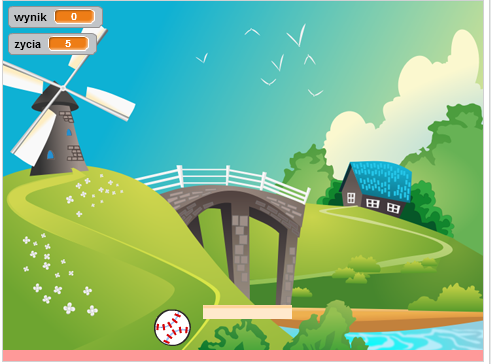

Wstęp
Dzisiaj wykorzystasz zdobyte wcześniej wiadomości na temat pozycji obiektów, zmiennych i instrukcji warunkowych tworząc grę - Ping Pong.
Krok 1: Przygotuj scenę i duszki
Zadania do wykonania
-
Utwórz nowy projekt i nazwij go "Ping pong"
-
Usuń kota. Pobierz tło dla projektu z tego miejsca (kliknij i zapisz grafikę CTR+S!)
-
Dodaj nowe tło dla sceny. Wybierz opcję "Wczytaj tło z pliku" i odnajdź pobraną przed chwilą grafikę.
-
Dodaj nowego duszka. Z biblioteki duszków wybierz piłkę (Baseball), którą będziesz odbijał podczas gry.
-
Poza piłką potrzebna nam będzie paletka. Dodaj własnego duszka rysując paletkę.
-
Teraz Twoja scena powinna wyglądać mniej więcej tak:
-
Możesz zmienić nazwy duszków, jeśli chcesz. To może być pomocne na dalszych etapach projektu. W tym celu kliknij małą niebieską ikonkę z literką "i" obok miniaturki duszka i zmień jego nazwę.
Zapisz swój projekt
Krok 2: Nowa piłka!
Zadania do wykonania
-
W naszej grze będziesz zdobywał punkty za każde odbicie piłki od paletki. Jeśli piłka dotknie dolnej krawędzi planszy, wtedy stracisz jedno życie. Gracz będzie miał 5 żyć.
W tym celu musimy utworzyć dwie zmienne: "wynik" i "życia". -
Za ustawienie tych zmiennych na początku gry odpowiadać będzie scena. Kliknij na miniaturkę sceny, przejdź do zakładki skrypty i dodaj następujący skrypt:
Dzięki temu po kliknięciu na flagę scena ustawi odpowiednie zmienne oraz nada komunikat "nowa piłka", który będzie rozpoczynał grę!
-
Ktoś musi odebrać nasz komunikat, prawda? Przejdź do duszka "Piłka" i w zakładce skrypty dodaj następujące skrypty:
-
Powyższy skrypt rozpocznie działanie po otrzymaniu komunikatu "nowa piłka". Wtedy sprawdzimy, czy graczowi zostały jakieś życia, jeżeli tak, to przeniesiemy piłkę na środek planszy.
-
Teraz musimy ustawić piłkę w określonym kierunku. Wylosujemy ten kierunek tak, żeby piłka rozpoczęła ruch ku górnej krawędzi. To da graczowi odrobinę czasu na reakcję. Nastepnie za pomocą pętli "zawsze" sprawimy, że piłka będzie przesuwała się o 10 kroków, aż napotka krawędź planszy. Wtedy odbije się. Zmień kod dla piłki i przetestuj działanie:
Zapisz swój projekt
Krok 3: Utrata życia
Zadania do wykonania
-
To było proste, prawda? Czas na dodanie funkcjonalności utraty życia. Zauważyłeś, że plansza na przykładzie zaprezentowanym wcześniej ma na dole różowy prostokąt? Jeśli nie, to spójrz:

Dodaj taki sam prostokąt dla Twojej planszy (w tym celu musisz wybrać miniaturkę sceny, przejść do zakładki kostiumy i posłużyć się narzędziem do rysowania prostokątów).
-
Skoro mamy już oznaczoną dolną krawędź planszy, musimy sprawić, żeby piłka zatrzymywała się po jej dotknięciu i żeby gracz w tym momencie tracił jedno życie. Zaktualizuj swój skrypt dla piłki w następujący sposób:
Zauważ, że kolor wybrany w instrukcji "jeżeli" to taki sam kolor jak tło prostokąta na dole planszy. Możesz go pobrać klikając najpierw na puste pole wewnątrz bloku "dotyka koloru", a następnie na prostokąt.
-
Powyżej dodaliśmy nadawanie komunikatu o stracie życia, jednak samo nadanie go niczego nie powoduje, prawda? Ktoś musi go odebrać. Pamiętasz, że to scena była odpowiedzialna za ustawianie ilości żyć na początku gry? Przejdź do skryptów dla tła i dodaj obsługę tego komunikatu:
Jeżeli więc gracz będzie miał więcej żyć niż 0, gra odejmie mu jedno, a następnie nada ponownie komunikat "nowa piłka", żeby ustawić piłkę na jej startowej pozycji. Jeśli natomiast graczowi nie pozostało już żadne życie, tło nada komunikat "koniec gry" i zatrzyma wszystkie skrypty.
-
Ten komunikat też musimy obsłużyć. Posłuży on nam do tego, żeby piłka wiedziała, kiedy poinformować gracza o ilości zdobytych punktów na koniec gry. Dodajmy więc taki kod dla piłki:
Zapisz swój projekt
Krok 4: Pierwsze punkty
Zadania do wykonania
-
Póki co wiele się w naszej grze nie dzieje. Po kliknięciu na flagę piłka powinna odbić się od górnej krawędzi, powędrować w kierunku dolnej, wtedy gra odejmie jedno życie i całość zacznie się od nowa. Ale na końcu nie dostajemy żadnego komunikatu, prawda? Dlaczego?
Nasz poprzedni kod zawiera błąd! Warunek w skryptach dla sceny, który sprawdza, czy po utracie życia gracz może grać dalej, powinien wyglądać inaczej. Zamiast sprawdzać, czy gracz ma więcej niż 0 żyć, musimy sprawdzić, czy ma więcej niż jedno życie, a jeśli nie, to ustawić zmienną "życie" na 0:
-
Błędy naprawione, czas dodać skrypt dla paletki! Będzie to prosta instrukcja, według której paletka zawsze będzie ustawiać się na pozycji "x" takiej samej jak myszka. Jak zapewne się domyślasz, dzięki temu będziesz mógł sterować paletką za pomocą myszki. Dodaj taki kod w skryptach paletki:
-
Teraz musimy sprawić, żeby piłka odbijała się od paletki i żeby każde takie odbicie sprawiało, że gracz zarobi jeden punkt. Musimy więc zmienić skrypty dla piłki. Dodajmy jeden warunek, Twoje skrypty powinny wyglądać tak jak poniżej, wtedy piłka po zetknieciu z paletką (blok "jeżeli dotyka 'paletka'") odbije się, doda 1 punkt i przesunie o 10 kroków.

-
Sprawdź kod. Jeśli piłka nie odbija się poprawnie, pewnie musisz przesunąć środek kostiumu paletki nieco powyżej jej grafiki. Poproś prowadzącego zajęcia o pomoc, jeżeli nie wiesz jak i dlaczego należy to zrobić.
-
Utrudnijmy nieco grę! Niech po każdym odbiciu od paletki piłka zwiększy swoją prędkość. W tym celu musimy dodać zmienną "prędkość":
-
Teraz wykorzystajmy nową zmienną i nieco zmieńmy kod dla piłki. Zauważasz różnice? Spójrz na kod poniżej:
Dla ułatwienia nowe fragmenty obramowane są czerwonymi prostokątami.
-
Przetestuj kod! Teraz powinieneś móc odbijać piłkę, zdobywać punkty i tracić życia.
Zauważyłeś, że po pewnym czasie piłka jakby przenikała przez paletkę? To oznacza, że prędkość jest już za wysoka. Możesz dodać warunek, który sprawdzi, czy prędkość piłki jest mniejsza niż 25 i tylko wtedy zwiększy ją po odbiciu od paletki? Albo zamiast zwiększać prędkość, wylosuj ją z zakresu od 10 do 20?
Zapisz swój projekt
Krok 5: Bonusy!
Zadania do wykonania
-
Do naszej gry możemy jeszcze dodać bonusy. W tym celu dodaj nowego duszka z biblioteki, np. motyla. Ustaw go na planszy.
-
Co pewien czas na planszy pokaże się bonus (za chwile to oprogramujemy), kiedy trafisz w niego piłką, gra doliczy Ci dodatkowe 10 punktów. Dodajmy następujący warunek w skryptach dla piłki:
-
Kod dla naszego nowego duszka będzie prosty. Najpierw duszek powinien zniknąć kiedy kliknieto flagę. Powinien znikać także, kiedy uderza w niego piłka (czyli reagować na komunikat "wyczyść dodatki"). Poza tym, nasz bonusowy duszek powinien w pętli "zawsze" czekać losową ilość czasu, wylosować pozycję do pokazania i pokazać się na planszy. Jego skrypty powinny wyglądać w ten sposób:
-
Brawo! Twoja gra jest gotowa!